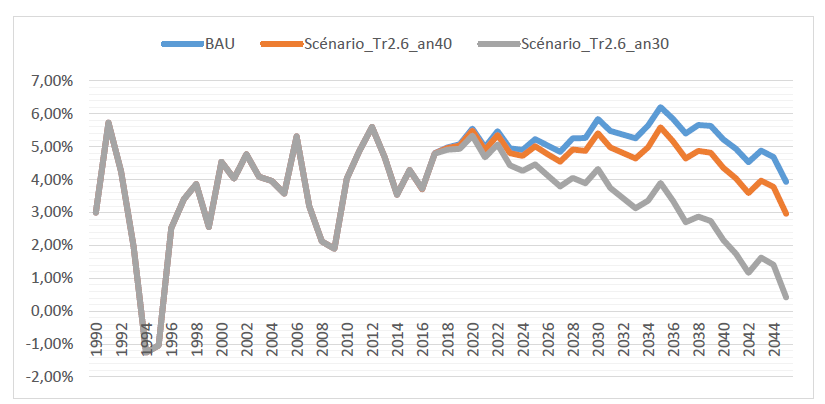
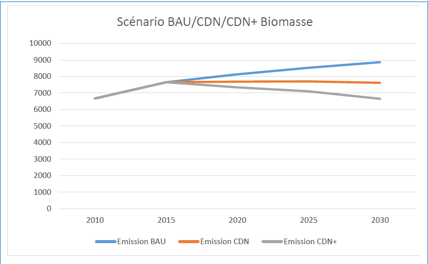
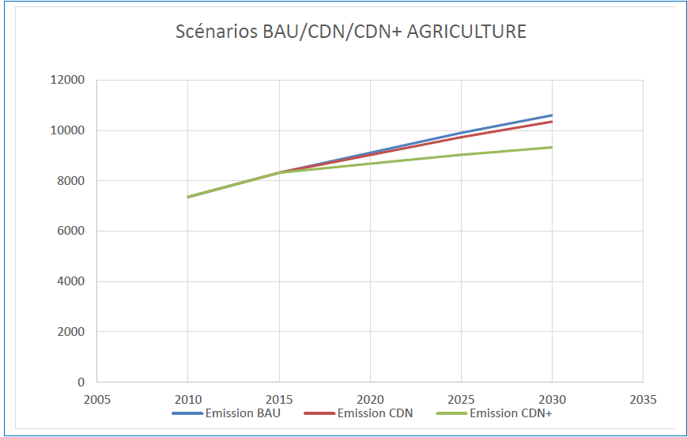
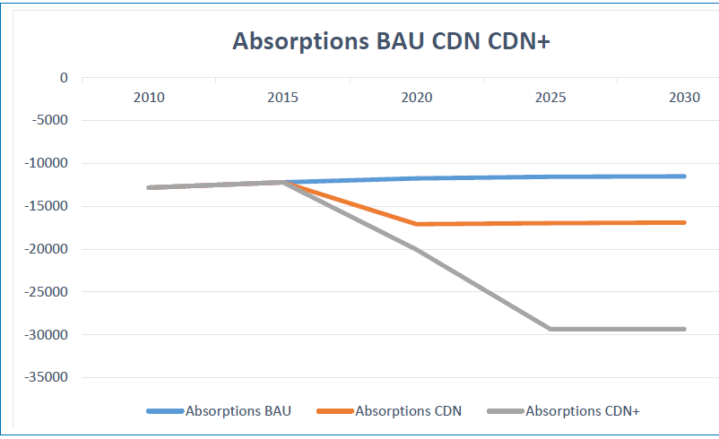
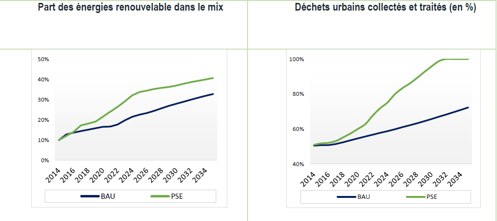

REPUBLIQUE DU SENEGAL
Un Peuple – Un But – Une Foi Foi
DOCUMENT APPROUVE – DECEMBRE 2020
La Contribution Déterminée au niveau National (CDN) du Sénégal s’inscrit dans le cadre de la vision prospective, « Plan Sénégal Émergent (PSE) », de sa stratégie et des plans de développement ainsi que des programmes sectoriels de gestion durable de ses ressources naturelles et environnementales. La CDN reprend les acquis de la CPDN. La CPDN, du Sénégal a été élaborée par une équipe de consultants locaux sous l’encadrement de la Direction de l ’Environnement et des Établissements Classés (DEEC) du Ministère de l’Environnement et du Développement Durable, en collaboration avec le Comité National sur les Changements Climatiques (COMNACC).
Un atelier national tenu le 14 septembre 2015, et présidé par le Ministre de l’Environnement et du développement durable, a permis de valider la CPDN, avec des engagements précis de réduction des émissions de Gaz à effet de serre (GES), par rapport aux émissions projetées, à l’horizon 2035. La CPDN a été adoptée en conseil des ministres le 16 septembre 2015.
En 2016, le Sénégal s’est lancé dans le processus de mise à jour de sa CPDN pour en faire une CDN qui constitue l’engagement du pays dans le cadre de l’accord de Paris. Cette transition répond principalement à des impératifs de réactualisation des données (sectorielles, macro-économiques, démographiques etc.) utilisées lors de l’élaboration de la CPDN, mais également à la nécessité de prendre en charge des composantes essentielles telles que la Mesure, la Notification et la Vérification (MNV), les besoins en renforcement de capacités et en transfert de technologie, essentiels pour une bonne mise en œuvre de la CDN ainsi que l’intégration des émissions issues de l’industrie pétrolière et gazière dont le début de production est prévu en 2022.
Aussi, une évaluation rigoureuse de la situation environnementale a permis d’identifier :
Dans les deux composantes de cette CDN, deux objectifs sont fixés :
Ces objectifs ont été déterminés et fixés pour chacun des secteurs et une agrégation de ces objectifs permet d’apprécier l’impact sur les émissions globales du pays. Ceci se traduit par une réduction relative des émissions de gaz à effet de serre de 5% et 7% respectivement, aux horizons 2025 et 2030, par rapport à la situation de référence (Business as usual) pour l’objectif inconditionnel (CDN). Cette réduction pourra être portée à 23% et 29% respectivement, aux horizons 2025 et 2030, par rapport à la situation de référence, si le Sénégal bénéficie du soutien de la communauté internationale avec des financements conséquents, la facilitation du transfert de technologies écologiquement rationnelles et du renforcement de ses capacités institutionnelles et humaines, dans le domaine du changement climatique (CDN+).
En 2010, les émissions globales s’établissaient à 16 752 Gg de C02 équivalent. Elles vont connaitre une progression régulière, pour atteindre 37 761 Gg, en 2030.
Plusieurs études réalisées au Sénégal renseignent sur les conséquences du changement climatique. Les impacts observés montrent une tendance à la baisse de la pluviométrie, une hausse des températures moyennes, une élévation du niveau de la mer, des perturbations sur la disponibilité des espaces cultivables, des ressources hydrauliques et halieutiques. Elles traduisent une grande vulnérabilité des écosystèmes du Sénégal, nécessitant un recours à des actions précises d’atténuation et d’adaptation face aux perspectives climatiques futures, afin d’en maîtriser les impacts potentiels, notamment en termes socio-économiques sur les 60% de la population dont la subsistance dépend directement de ces ressources.
Sur les risques climatiques projetés, leurs impacts potentiels ainsi que les vulnérabilités induites, les modèles montrent globalement une prédominance des risques de sécheresses, des vagues de chaleur et une recrudescence des événements humides extrêmes. L’occurrence de ces risques expose différemment les régions du Sénégal.
Les régions les plus affectées par l’augmentation du risque de sécheresse extrême sont situées au nord du Sénégal, la région de Saint Louis montrant le risque le plus intense, pour une augmentation de la fréquence des sécheresses comprises entre 20 et 30%.
La fréquence des événements humides extrêmes est plus importante dans le scénario de faible réchauffement et cela, principalement, pour les zones situées au nord et à l’est du Sénégal (Matam, Tambacounda, Louga).
La mise en œuvre de la Contribution du Sénégal est estimée à un coût de 13 milliards de dollars US dont :
Le total inconditionnel et conditionnel s’élèvent à respectivement 4,8 milliards dollars US et 8,2 milliards dollars US.
Elle nécessitera d’importants moyens financiers, humains et technologiques de la part du Sénégal, mais aussi de l’appui de la communauté internationale, afin de permettre des réductions encore plus significatives d’émissions de GES et une résilience aux changements climatiques.
Des simulations ont permis d’évaluer les impacts et les retombées socio-économiques escomptées de ces mesures. Bien qu’intervenant directement sur les secteurs cités précédemment, ces mesures constituent un levier d’amélioration de la situation économique nationale, de la santé publique, de la gestion des problèmes liés à l’urbanisation etc.
AFAT : Agriculture, Foresterie et Autres Affectations des Terres ;
BAU : Cours Normal des Affaires – Business As Usual en anglais ;
BRT : Bus à Haut Niveau de Service – Bus Rapid Transit ;
CCNUCC : Convention-Cadre des Nations Unies sur les Changements Climatiques ;
CET : Centre d’Enfouissement Technique ;
CETUD : Conseil Exécutif des Transports Urbains de Dakar ;
CIVD : Centre Intégré de Valorisation des déchets ;
CN : Communications Nationales ;
COMNACC : Comité National sur les Changements Climatiques ;
CORDEX : Expérimentation des méthodes dites de désagrégation ;
CDN : Contribution Déterminée au niveau National ;
CPDN : Contribution Prévue Déterminée au niveau National ;
CRN : Centre de Regroupement Normalisé
CRODT : Centre de Recherche Océanographique Dakar Thiaroye ;
CSE : Centre de Suivi Écologique ;
CSP : Concentrated Solar Power (Centrale Solaire Thermodynamique) ;
DGPRE : Direction de la Gestion et de la Planification des Ressources en Eau ;
CO2e : Équivalent en dioxyde de carbone (Équivalent CO2) ;
GDT : Gestion Durable des Terres ;
GES : Gaz à Effet de Serre ;
Gg : Giga Gramme ;
GIEC : Groupe Intergouvernemental d’Experts sur l ’Évolution du Climat ;
IDH : Indice de Développement Humain ;
IPCC : Intergouvernemental Panel on Climate Change, GIEC en français.
MRV: Mesure, Notification et Vérification – Measuring, Reporting and Verification;
ONAS : Office National de l ’Assainissement du Sénégal ;
PANA : Plan d’Action National d’Adaptation aux changements climatiques ;
PAP : Pl an d’Actions Prioritaires ;
PAPIL : Programme d’Appui à la Petite Irrigation Locale ;
PEID : Petits États Insulaires en Développement ;
PGIES : Projet de Gestion Intégrée des Écosystèmes ;
PIB : Produit Intérieur Brut ;
PIUP : Procédés Industriels et Utilisation des Produits ;
PMA : Pays les Moins Avancés ;
PNA : Plan National d’Adaptation aux changements climatiques ;
PNGD : Programme National de Gestion des Déchets ;
PRACAS : Programme d’Accélération de la Cadence de l’Agriculture sénégalaise ;
PSE : Plan Sénégal Émergent ;
RCP : Trajectoires Représentatives de Concentration – Représentative Concentration Pathways ;
RNA : Régénération Naturelle Assistée ;
SRI : Système de Riziculture Intensif ;
CO2 : Dioxyde de Carbone
CH4 : Méthane ;
N2O : Protoxyde d’azote ou oxyde nitreux ;
MW : Mégawatt ;
MWc : Mégawatt-crête.
Le Plan Sénégal Émergent (PSE) est le cadre de référence de la politique économique et sociale du Sénégal, à l’horizon 2035. Le PSE mise sur une croissance économique reposant principalement sur l’intensification de l’activité dans les secteurs primaire et secondaire. Or, les pertes et préjudices actuels ainsi que les impacts projetés des changements climatiques sur les terres arables, les ressources hydrauliques et halieutiques sont susceptibles de compromettre le succès du PSE.
Au regard de la forte exposition et de la vulnérabilité du pays aux changements climatiques et en réponse à l’Accord de Paris, le Sénégal entend contribuer à l’effort collectif, au travers d’une mise en œuvre de mesures d’atténuation et d’adaptation dans les secteurs économiques prioritaires, les communautés, les infrastructures, les écosystèmes et les villes.
La stratégie repose sur l’intégration de la dimension changement climatique dans la formulation et la programmation des politiques de développement, tenant compte d’autres priorités telles la santé humaine et animale, la lutte contre la pauvreté et la malnutrition, la promotion des énergies renouvelables et l’efficacité énergétique et la prise en compte du genre.
Concernant ce dernier, le Sénégal s’est lancé dans la mise en œuvre d’une Stratégie nationale pour l’Équité et l’Égalité de Genre (SNEEG), fondée sur la promotion de l’équité et de l’égalité de genre qui interpelle tous les acteurs de développement. Le Gouvernement a pris l’engagement d’intégrer la problématique du genre dans toutes les politiques publiques.
La CDN du Sénégal s’inscrit dans le cadre du PSE, en écho à ses Plans d’actions prioritaires.
a. Evolution des Emissions
Le Sénégal a soumis trois communications à la CCNUCC en 1997, 2010 et 2015, avec respectivement, comme années de référence : 1994, 2000 et 2005. Il en ressort une augmentation nette des émissions nationales. Les secteurs de l’énergie et de l’agriculture sont les sources majeures comptant respectivement pour 40 et 48% des émissions, en 2005. La dynamique montre une hausse des émissions dans tous les secteurs entre 1994 et 2005, excepté le secteur déchets qui a nécessité un affinement de données en 2005 (Tableau 2).
Les informations détaillées concernant les 03 communications soumises sont résumées sur le tableau qui suit :
Tableau 1 : Synthèse des émissions des trois communications nationales (Gg CO2e)
| 1994 | 2000 | 2005 | |
| Communication 1 | Communication 2 | Communication 3 | |
| Énergie hors biomasse | 3 788,6 | 4 663 | 5 178,93 |
| Agriculture | 2 957,6 | 6 275,89 | 6 359,84 |
| Déchets | 2 226,2 | 2 075,64 | 979,4 |
| Procédés industriels et Utilisation des Produits | 345,5 | 301, 51 | 541 |
| Émissions globales (Sans absorptions de la foresterie) | 9317,9 | 13 298 | 13 084 |
Sources : communications nationales du Sénégal auprès de la CCNUCC
NB : Le secteur de l’utilisation des terres, du changement d’affectation des terres et la foresterie demeure un important puits de carbone dont les absorptions nettes augmentent (Tableau 3).
Tableau 2 : Absorptions de carbone dans le secteur de la foresterie et des terres (Gg CO2e)
| 1994 | 2000 | 2005 | |
| Communication 1 | Communication 2 | Communication 3 | |
| Foresterie et terres | -5 997 | -10 555 | -11 434 |
Le Sénégal a progressivement amélioré la méthode d’inventaire des GES dans le secteur de la foresterie, avec l’utilisation de certains facteurs spécifiques, la collecte de données plus précises sur les formations forestières et l’application des directives récentes du GIEC.
b. Principales tendances climatiques et risques associés
Les tendances climatiques au Sénégal ont été appréciées sur la base de trois paramètres clés, notamment les températures, la pluviométrie et l’état de la mer. Ces tendances ont pu être modélisées grâce aux deux scénarios RCP 4.5 et RCP 8.5.
Les informations sur les scénarios et tendances climatiques sont présentées dans les tableaux qui suivent :
Tableau 3 : Changement moyen de la pluviométrie et de la température projeté par zone et par scenario. La pluviométrie est exprimée en mm, tandis que la température est exprimée en degré Celsius.
Tableau 4 : Tendances actuelles et futures des paramètres clés climatiques
| Paramètres climatiques | Tendances actuelles | Tendances futures | |
|---|---|---|---|
| Température |
|
Augmentation moyenne située entre +1,17 et 1,41°C à l’horizon 20351 (tableau 3) |
|
| Pluviométrie |
|
|
|
| Etat de la mer | Niveau de la mer |
|
Sur l’ensemble des côtes sénégalaises et pour une élévation du niveau marin de 1 m d’ici 2100, prévoyaient que 55 à 86 km2 de plages disparaîtraient Environ 6000 km2 de zones basses, essentiellement les zones estuariennes, seraient inondées. Ceci équivaudrait à une disparition de la totalité des mangroves actuelles. |
| Température surface de mer | Augmentation de la température de surface de la mer d'environ 0,04 °C à 0,05 °C par an depuis le début des années 1980. | ||
| Vitesse des vents | Forte variabilité de la vitesse du vent sur la période 1981-2010. La force du vent reste toujours sur une pente descendante entre 2010 et 2015, avec des pics pouvant aller jusqu’à plus de 6 m/s. | ||
c. Impacts Et Vulnérabilités
L’évaluation des différents impacts et vulnérabilités au niveau national montre que l’ensemble des secteurs clés du PSE demeurent tous directement ou indirectement exposés aux impacts du changement climatique. Cette vulnérabilité concerne à la fois les communautés, les écosystèmes, les infrastructures et l’économie nationale. Sur le plan économique, une simulation à l’aide du modèle T21 montre que l’augmentation des températures aura une incidence négative sur la croissance du PIB et entrainera un niveau de pauvreté plus élevé au Sénégal (figures 1 et 2)4.

Figure 1 : Effets de l’augmentation de la température sur la croissance du PIB mesuré par le modèle T21 Source :
Direction de la Planification (MEFP)

Figure 2 : Effets de l’augmentation de la température sur la lutte contre la pauvreté Source : Direction de la Planification (MEFP)
Le maintien des tendances observées dans le passé, notamment la hausse des températures et la baisse des pluies, aura des incidences négatives sur les bases productives de l’économie nationale (biodiversité, agriculture, élevage, ressources en eau, pêche, zone côtière…) à l’horizon 2031-2041. Les changements climatiques apparaissent ainsi comme un frein au développement et à la lutte contre la pauvreté. Ce qui représente un défi majeur pour l’atteinte des objectifs du PSE à l’horizon 2035.
d. Équité et Ambition
La CDN du Sénégal traduit un engagement soutenu à inscrire le pays sur une trajectoire de développement sobre en carbone et assurant la résilience de l’économie, des communautés, des infrastructures et des villes.
La CDN est équitable au regard des capacités nationales et de la vulnérabilité climatique du pays. Elle est ambitieuse en ce qu’elle va au-delà de la proposition de stratégies et de programmes accordées aux PMA et aux PEID dans l’Accord de Paris.
La contribution prévoit une réduction des émissions de GES en 2025 et 2030 dans différents secteurs de l’économie par rapport aux émissions projetées pour les mêmes années, selon un scénario de référence basé sur un certain nombre d’hypothèses. Elle est constituée d’une contribution inconditionnelle (CDN) et d’une contribution conditionnelle (CDN+).
Les principales activités prévues dans les contributions inconditionnelles et conditionnelles couvrent chacune des secteurs de l’économie sénégalaise et leurs impacts sont présentés par rapport aux émissions de GES de chaque secteur. Une agrégation de ces réductions d’émissions est aussi présentée pour voir leurs évolutions par rapport aux émissions globales. Le Sénégal s’engage, de façon inconditionnelle et conditionnelle à réduire ses émissions de GES, respectivement en 2025 et 2030, par rapport aux émissions projetées pour les mêmes années, selon un scénario « Business as Usual » dans les secteurs suivants :
ÉNERGIE
|

Figure 2 : Scénarios BAU/CDN/CDN+ Énergie
Les émissions liées à la biomasse (production de charbon et de bois) sont comptabilisées au niveau du secteur de la foresterie. La connaissance et maitrise des niveaux d’émissions de la biomasse serviront à définir les actions d’atténuation dudit sous-secteur. Le détail des émissions de la biomasse est consigné dans le tableau qui suit :
|

Figure 3 : Scénarios BAU/CDN/CDN+ Biomasse
AGRICULTURE
Tableau 7 : Émissions BAU/CDN (Gg CO2e)
|

Figure 4 : Scénarios BAU/CDN/CDN+ Agriculture
DÉCHETS
Tableau 8 : Émissions BAU/CDN DECHETS (Gg CO2e)
|

PROCÉDÉS INDUSTRIELS ET UTILISATIONS DES PRODUITS
| Scénarios | 2025 | 2030 |
|---|---|---|
| BAU | 3 953 | 3 953 |
| CDN | 3 953 | 3 953 |
| CDN+ | 3 792 | 3 631 |
| % réduction CDN | 0,0 | 0,0 |
| % réduction CDN+ | 4,0 | 8,1 |

Figure 6 : Scénarios BAU/CDN/CDN+ PI
FORESTRIE
|

Figure 7 : Scénarios BAU/CDN/CDN+ Foresterie
Agrégées, ces réductions d’émissions représenteront respectivement 05 et 07%, en 2025 et 2030 par rapport aux émissions projetées, selon un scénario « Business as Usual », sur la base d’un financement domestique et maitrisé.
Ces réductions atteindront 23,7 et 29,5 % respectivement, en 2025 et 2030, à condition de recevoir un soutien substantiel de la communauté internationale.
|

Figure 8 : trajectoire globale des émissions
La contribution sera mise en œuvre principalement par :
Les activités présentées dans le présent rapport, ne sont pas exhaustives. Néanmoins, elles constituent la base de la contribution dans le domaine de l’atténuation.
La contribution est définie par la réduction des émissions de GES en 2025 et 2030 par rapport aux émissions projetées dans chacun des secteurs concernés selon un scénario « Business as Usual ».
Tableau 12 : Caractéristiques de la CDN
| Type d’objectif |
Déviation par rapport à une pratique courante (BAU) pour chacun des secteurs concernés (Énergie, AFAT, Déchets et Industrie). Réduction inconditionnelle des émissions par rapport à un scénario BAU et suivant l’année de référence. Réduction conditionnelle des émissions des émissions par rapport à un scénario BAU et suivant l’année de référence |
|
| Année de base | 2010 | |
| Période de Mise en œuvre | 2025-2030 | |
| Gaz couverts | CO2, CH4, N2O | |
| Secteurs couverts |
Tous les secteurs (IPCC 2006)
|
|
| Potentiel de Réchauffement Global : CO2 :1, CH4 : 21, N2O : 310 | ||
| Méthodologie d’inventaire des émissions : IPCC 2006 | ||
| Objectifs sectoriels | ||
| Énergie : | ||
| Objectif inconditionnel | 7,6 et 10%, | |
| Objectif conditionnel | 35,4 et 41,2% | |
| Agriculture | ||
| Objectif inconditionnel | 1,72 et 2,36% | |
| Objectif conditionnel | 8,76 et 11,98 % | |
| Déchets | ||
| Objectif inconditionnel | 10,99 et 11% | |
| Objectif conditionnel | 65,28 et 65,28% | |
| Procédés Industriels et Utilisation des Produits | ||
| Objectif inconditionnel | 0% | |
| Objectif conditionnel |
4 et 8,1% |
|
| Agrégation des objectifs sectoriels | ||
| Objectif inconditionnel | 5 et 7% de réduction des émissions de GES respectivement en 2025 et 2030 | |
| Objectif conditionnel | 23,7 et 29,5 % de réduction des émissions de GES respectivement en 2025 et 2030 | |
Les émissions de GES de l’année de base 2010 (BAU) se répartissent comme suit : (voir tableau 13)
Tableau 13 : Répartition des émissions de GES en 2010
| Secteur | Niveau d’émissions en Gg CO2e |
Pourcentage |
|---|---|---|
| Énergie | 6165 | 36,8 |
| Agriculture | 7354 | 43,8 |
| Déchets | 1820,8 | 10,8 |
| Procédés Industriels et Utilisation des Produits | 1412 | 8 |
| Total | 16 752 | 100 |
NB : Les émissions nettes du Sénégal en 2010 sont estimées à 3 925 Gg CO2e.

Figure 9 : répartition des émissions en Gg de GES en 2010
Le secteur agricole représente presque la moitié des émissions du Sénégal en 2010. Cependant, les projections aux horizons 2020-2030 montrent que la tendance va s’inverser au profit du secteur énergétique due notamment à l’augmentation de la demande d’énergie. Les informations détaillées sur les projections d’émissions jusqu’en 2030 sont présentées sur le tableau qui suit :
Tableau 14 : Projections des émissions par secteur jusqu’en 2030 (Gg CO2e)
| 2010 | 2015 | 2020 | 2025 | 2030 | |
| Énergie | 6165 | 10 080 | 13 060 | 19512 | 23 927 |
| Agriculture | 7354 | 8323,9 | 9110,7 | 9903,4 | 10600 |
| Déchets | 1820 | 2061 | 2081 | 2189 | 2575 |
| Procédés industriels et Utilisation des Produits | 1412 | 1 986 | 3 146 | 3 953 | 3 953 |
| Total | 16752 | 21 637 | 25 404 | 32 648 | 37 761 |
Deux secteurs se présentent comme les principaux émetteurs de GES au niveau national. Le secteur de l’énergie va connaitre une croissance exponentielle. En effet, Il représentera plus de 50% des émissions globales du pays en 2022. Cette situation peut être expliquée par un dynamisme du secteur avec notamment le début de l’exploitation pétrolière et gazière à partir de 2022.
Les émissions du secteur de l’agriculture connaitront une hausse progressive et régulière, jusqu’en 2030. La fermentation entérique va demeurer la catégorie majeure d’émissions de ce secteur.
Secteur de l’énergie
Le secteur de l’énergie constitue un soutien majeur au développement de l’économie et à la réduction des inégalités sociales et territoriales. La facture pétrolière représente près de 34 % des revenus d’exportation du pays.
C’est ainsi que la Stratégie d’Émergence mise en place, depuis 2012, traduit l’ambition du Sénégal de garantir un accès universel à l’électricité fiable, durable et accessible, à l’horizon 2025. Le Plan Sénégal Émergent (PSE) renforce les orientations de la Lettre de Politique de Développement du Secteur de l’énergie d’octobre 2012 concernant l’électricité, les hydrocarbures, l’accessibilité à l’Énergie en milieu rural, l’efficacité énergétique et les combustibles domestiques.
Sous-secteur de la production d’électricité
| Contexte du sous-secteur | Le parc de la production publique d’électricité est essentiellement thermique, soit 93 % de puissance installée et le combustible dominant est le fioul, à hauteur de 75 %. L’accès à l’électricité en milieu rural est toujours limité. Une stratégie nationale du secteur a été développée et déclinée autour des points suivants :
|
| Actions stratégiques de la CDN |
|
| Actions stratégiques de la CDN+ |
|
i.Sous-secteur des combustibles domestiques
| Contexte du soussecteur | Les combustibles domestiques (charbon de bois et bois de feu principalement) représentent près de 35% de la consommation d’énergie finale des ménages, en 2016. Le bois de feu et le charbon de bois constituent plus de 75% des sources d’énergie de cuisson des ménages. Le PSE, à travers la LPDSE, se fixe pour objectif la diversification des sources d’énergie, la promotion de l’utilisation des produits de substitution du bois et charbon de bois. |
| Actions stratégiques de la CDN |
|
| Actions stratégiques de la CDN+ |
|
iii. Sous-secteur de l’efficacité énergétique
| Contexte du soussecteur | Le gisement national d’économie d’énergie est mobilisable à travers tous les secteurs, dont notamment la mise en place d’un cadre législatif et réglementaire opérationnel, les actions de généralisation des lampes efficaces (LBC et LED), la normalisation et la labellisation des équipements électroménagers et bureautiques, la gestion durable de l’éclairage public. Il s’agira également de rendre opérationnel le programme issu de la Stratégie de Maitrise de l’Énergie, à l’horizon 2030. |
| Actions stratégiques de la CDN |
|
| Actions stratégiques de la CDN+ |
|
Secteur de l’Industrie
| Contexte du secteur | La contribution de l’industrie au PIB totale au Sénégal oscille depuis une décennie entre 20 et 23 %.
Le PSE met l’accent sur l’industrialisation avec notamment des choix stratégiques dirigés vers :
|
| Actions stratégiques de la CDN/CDN+ |
|
Secteur des transports
| Contexte du secteur | Le sous-secteur « transports, poste et télécommunications » représente 22 à 23 % entre 2008 et 2012 du secteur tertiaire. La stratégie décennale 2014-2023 du PSE sous son Pilier 1 repose sur « un secteur des transports efficace pour soutenir la transformation de la production et de la croissance » Les options proposées dans le cadre de la CDN concourent à renforcer les actions ambitieuse cours. Elles permettront :
|
| Actions stratégiques de la CDN/CDN+ |
|
Secteur des déchets
| Contexte du secteur | Le secteur des déchets est transversal et en adéquation avec le PSE. Le gouvernement a réalisé d’énormes efforts qui ont abouti à : (1) la réorganisation du secteur, à travers l’élaboration de texte règlementaires adéquats, (2) la mise en œuvre du Programme National de Gestion des Déchets solides, (3) la réalisation d’infrastructures de gestion des déchets solides et liquides, et (4) l’adoption d’un programme de sensibilisation, de formation et de renforcement de capacité. |
| Actions stratégiques de la CDN/CDN+ | Au niveau de l’assainissement liquide
Au niveau de l’assainissement solide
|
Secteur de l’agriculture
| Contexte du secteur | La deuxième phase du Programme de Relance et d’Accélération de la Cadence de l’Agriculture sénégalaise (PRACAS2 2019-2023), volet agricole du PSE, s’est fixée pour objectif stratégique d’atteindre une production annuelle de 2 100 000 tonnes de riz paddy, 2 000 000 de tonnes d’arachides, 600 000 tonnes d’oignons et 200 000 tonnes d’exportation de fruits et légumes, à l’horizon 2023. La stratégie de mise en œuvre du programme repose sur l’amélioration de la fertilité des terres, l’augmentation des rendements des spéculations ciblées et la maitrise de l’eau. Les emblavures en riz passeront de 677 197 ha, en 2019 à 1 001 640 ha, en 2023 dont 17,5% en irrigué, 32,5% en pluvial et 50% simultanément en irrigué et pluvial.
Conformément à la lettre de Politique de Développement de l’Élevage (2017-2021), l’État du Sénégal vise aussi un objectif d’augmenter significativement la productivité et les productions animales à l’horizon 2021, via la modernisation des pratiques d’élevage et l’appui aux filières viandes (bovins et petits ruminants), aviculture (familiale et industrielle) et lait. |
| Actions stratégiques de la CDN |
|
| Actions stratégiques de la CDN+ |
|
Secteur de la foresterie
| Contexte du secteur | La Lettre de Politique de l’environnement a retenu parmi ses objectifs spécifiques « Réduire la dégradation l’environnement et des ressources naturelles, lutter contre les effets néfastes du changement climatique et la perte de biodiversité ». Un des programmes porte sur la lutte contre la déforestation et la dégradation terres en vue de :
|
| Actions stratégiques de la CDN |
|
| Actions stratégiques de la CDN+ |
Ces efforts permettront de réduire de 25% le taux de déforestation, qui passera de 40 000 ha/an, en 2010, à 30 000 ha/an, en 2030. |
Les mécanismes de marché constituent un outil de premier choix pour la mise en œuvre des CDN. Comme avec le Mécanisme de Développement Propre (MDP) sous le Protocole de Kyoto, le Sénégal continuera à réaliser des activités d'atténuation dans le cadre des mécanismes de marché carbone international de l’Accord de Paris aux fins de la CDN avec la collaboration des partenaires internationaux.
Le Sénégal s'engage à respecter les règles qui garantissent l'intégrité environnementale, promeuvent le développement durable et évitent le double comptage des réductions d'émissions, conformément aux règles qui seront adoptées dans le cadre de l’article 6 de l’Accord de Paris. Le Sénégal soutient également une transition cohérente de son portefeuille de projets MDP, dans le contexte de l’Accord de Paris, tenant compte des règles qui seront adoptées dans le cadre de l’article 6.4 de l’Accord de Paris.
La CDN du Sénégal contient un large éventail d’activités d’atténuation dans les secteurs de l’énergie, de la foresterie, de l’agriculture, de l’industrie et des déchets. La réalisation des objectifs conditionnels pourrait être satisfaite par les mécanismes du marché. Un arrangement de partage approprié de la réduction des émissions entre le Sénégal et les pays partenaires devrait être envisagé.
Les projets de marché carbone devront contribuer au financement de l’adaptation.
Quelques substances appauvrissant la couche d’ozone (SAO) sont aussi des GES, avec, plus ou moins, des pouvoirs de réchauffement global très importants
L’encadrement de ces substances est assuré par la Convention de Vienne, le Protocole de Montréal ainsi que l’Amendement de Kigali. Au niveau national, des avancées dans la mise en œuvre de ces textes juridiques ont été notées avec la mise en place :
o d’un Décret n°2000.73 du 31 janvier 2000 relatif à la consommation des SAO (CFC, HCFC) ; o d’un Arrêté interministériel n°00526 du 15 janvier 2014 relatif aux HCFC, actuellement en application ; o d’un Arrêté interministériel pour intégrer la réduction des HFC qui ont un potentiel de réchauffement très élevé.
Des résultats ont été obtenus dans la mise en œuvre d’actions visant à réduire, voire éliminer la consommation des SAO, il s’agit de :
Fort de ce constat, le Sénégal manifeste son intérêt à poursuivre la lutte contre les SAO ainsi que la mise en œuvre de programmes phares y relatifs en lien avec les initiatives internationales existantes, portant dans les domaines suivants :
Une réglementation appropriée sera mise en place sur les normes énergétiques des équipements électroménagers.
Les impacts en termes de réduction des émissions de GES attendus de la mise en œuvre de (1) l’Amendement de Kigali (substitution des HFC) (2) de programmes phares complémentaires sur les SAO sont présentés sur le tableau ci-dessous :
Tableau 15 : Émissions de HFC évitées
| Périodes | 2009 | 2035 | 2040 | 2045 |
|---|---|---|---|---|
| Émissions évitées (Gg) avec la substitution des HFC | 267 | 801 | 1334 | 2135 |
| Émissions évitées (Gg) avec la mise en œuvre de programmes complémentaires (scénario additionnels d’élimination de 10%) | 294 | 881 | 1468 | 2348 |
L’objectif visé à travers la mise en place des mesures d’adaptation est d’accroitre la résilience des écosystèmes et des populations face aux impacts de la variabilité et du changement climatique.
Sur la base des tendances d’augmentation de la température et de la baisse de la pluviométrie, les objectifs spécifiques d’adaptation pourraient se structurer autour de trois points :
Eu égard aux conséquences potentielles du changement climatique au niveau de certains axes du PSE (Agriculture, élevage, pêche et aquaculture et agroalimentaire (3.1.1) ; Santé et nutrition (3.2.3) et la Protection sociale (3.2.4), il apparaît nécessaire de renforcer la résilience de l’économie nationale, face aux conséquences de la variabilité et du changement climatique, à travers des mesures d’adaptation actuelles et préventives (Simulations à partir du modèle T21-iSDG-Sénégal).
Tableau 16 : Principaux impacts et mesures d’adaptation prioritaires actuelles et préventives par secteur
|
SECTEUR |
IMPACTS ET VULNERABILITE PAR SECTEURS |
MESURES D’ADAPTATION PRIORITAIRES |
||
|---|---|---|---|---|
|
Impacts actuels- Scénario 2°C |
Impacts futurs-scénario 4°C |
Principales mesures d’adaptation prioritaires actuelles (horizon 2025-2030 pour 2°C) |
Principales mesures d’adaptation prioritaires préventives (horizon 2040-2050 pour 4°C) |
|
|
Agriculture |
|
|
|
|
|
Élevage |
|
|
|
|
|
Pêche |
|
| ||
|
Zone côtière |
|
|
|
|
|
Ressources en eau |
|
|
|
|
|
Biodiversité |
|
|
|
|
|
Santé |
|
|
|
|
Gestion des risques et catastrophes dus aux inondations |
|
|
|
|
Le caractère dynamique de la vulnérabilité, souvent influencé par plusieurs facteurs (environnementaux, socio-économiques, politiques et institutionnels), rend complexe toute action d’adaptation au changement climatique. Les points ci-dessous constituent alors des enjeux majeurs que le Sénégal devra maîtriser :
Sous la supervision de la Direction de l’Environnement et des Établissements Classés du Ministère de l’Environnement et du Développement Durable et avec l’appui du COMNACC, le suivi et l’évaluation de la CDN seront assurés par les services techniques sectoriels.
Il s’agira, entre autres, de veiller au suivi de la mise en œuvre des activités prévues dans la présente contribution ainsi que des différents indicateurs de la CDN.
Un plan de renforcement de capacités à l’attention des secteurs concernés par la MNV sera établi dans la stratégie de mise en œuvre de la CDN avec les couts correspondants.
L’évaluation des besoins en financement des actions d’atténuation et d’adaptation aux effets du changement climatique prévus dans la présente CDN est basée sur les listes de programmes et projets identifiés (voir annexe 1 et 2). Il faut noter que la réalisation de la CDN est accompagnée de l’élaboration d’une stratégie opérationnelle d’exécution et de financement de la CDN.
Cette stratégie permettra d’asseoir les modalités techniques, sociales et financières adéquates favorables à la réalisation de la CDN dans les délais prévus.
Les besoins en financement pour l’Atténuation des émissions de GES s’élèvent à environ 8,7 milliards de dollars US dont à 3,4 milliards dollars en inconditionnel et 5,3 milliards US en conditionnel. (Voir tableau pour plus de détail)
Tableau 17 : Besoins en Financement de la CDN par secteurs en dollars US
| Secteurs | Couts inconditionnels | Couts Conditionnels | Total |
|---|---|---|---|
| Production d’Électricité | 729 472 000 | 1928 640 000 | 2 658 112 000 |
| Combustibles Domestiques | 114 144 000 | 209 920 000 | 324 064 000 |
| Efficacité Énergétique | 19 090 000 | 619 258 000 | 638 348 00 |
| Industrie | 42 400 866 | 488 414 222 | 530 815 088 |
| Transport | 1 582 000 000 | 13 120 000 | 1 595 120 000 |
| Déchets | 648 883 026 | 1 185 800 000 | 1 834 683 026 |
| Agriculture | 255 910 688 | 470 802 202 | 726 712 890 |
| Foresterie | 4 681 100 | 450 117 000 | 454 798 100 |
| Total | 3 396 581 680 | 5 366 151 424 | 8 762 733 104 |
Les besoins en financement pour l’Adaptation au changement climatique du Sénégal sur la période s’élèvent à environ 4,3 milliards US dont 1,4 milliards US d’inconditionnel et 2,9 milliards US de conditionnel (tableau 4).
Tableau 18 : besoins en financement pour l’adaptation au changement
| BESOINS EN FINANCEMENT (dollar US) | |||
|---|---|---|---|
| Secteurs | Inconditionnel (1) | Conditionnel (2) | Total (1+2) |
| Agriculture | 169 366 600 | 513 581 286 | 682 947 886 |
| Élevage | 150 721 824 | 251 305 352 | 402 027 176 |
| Pêche | 39 800 000 | 238 200 000 | 278 000 000 |
| Ressources en Eau | 317 043 200 | 537 735 200 | 854 778 40011 |
| Zones côtières | 158 951 052 | 504 618 800 | 663 569 800 |
| Biodiversité | 15 490 000 | 202 540 000 | 217 490 000 |
| Santé | 325 653 347 | 175 351 803 | 501 005 200 |
| Inondations | 213 086 800 | 504 618 800 | 717 705 60012 |
| Total | 1 387 112 823 | 2 927 951 241 | 4 315 064 064 |
En fin de compte, les besoins financiers de la CDN se chiffrent à 13 milliards US répartis comme suit :
Remarque : Cette présente estimation ne couvre pas les aspects liés au renforcement de capacités. Ces derniers sont estimés à 100 millions de dollars US durant la période 2020-2030.
Cette évaluation des besoins en renforcement de capacités sera détaillée avec la stratégie de mise en œuvre de la CDN.
Dans le cadre de l’intégration du Changement Climatique dans les politiques publiques de développement, une simulation du niveau de prise en compte des options de la CDN au niveau du PAP-PSE 2 a été proposée. La simulation fait une analyse comparative entre le cout des actions de la CDN inconditionnelle sous ses volets adaptation/atténuation et celui des projets/programmes sobres en carbone et résilients au climat du PAP PSE2. L’analyse a abouti aux conclusions suivantes :
La mise en œuvre des projets « climat » du PAP PSE 2 va permettre le respect des engagements du Sénégal contenus dans la CDN inconditionnelle. Pour preuve, le cout global des projets climat du PAP-PSE2 est évalué à 3162 milliards FCFA, alors que celle de la CDN inconditionnelle est de 2734 milliards FCFA ;
Cette simulation sur la prise en compte du climat dans le PSE2 montre des avancées significatives dans le processus de verdissement de nos politiques publiques. Il est important de poursuivre cette dynamique notée dans certains secteurs (énergie, inondation, industrie etc.) et d’améliorer la prise en compte d’autres (érosion côtière, élevage, santé etc.) dans le PSE2.
L’analyse des retombées des options prévues est faite à l’aide du modèle T21-iSDG-Sénégal qui est un outil de planification intégré à moyen et long terme. Par son approche systémique, il intègre les multiples variables économiques, sociales et environnementales dans un seul cadre cohérent. Un atout majeur du T21-iSDG-Sénégal est que l'outil reproduit le réseau complexe des interdépendances causales et des nombreuses boucles de rétroaction importantes qui sont le moteur de la croissance et du développement. Pour ce faire, deux scénarios sont envisagés : le scénario de base (BAU) et le scénario PSE qui intègre parfaitement les options prévues dans la CDN (voir partie 4).
La mise en œuvre des mesures d’adaptation et d’atténuation prévues par le Sénégal dans le cadre du PSE, dans sa phase 2, devrait générer des retombées socioéconomiques importantes dans plusieurs secteurs. Au plan macroéconomique, ces investissements devraient stimuler la croissance économique, créer des emplois et induire une diminution de la pauvreté. En termes de production, les simulations indiquent un taux de croissance annuel moyen du produit intérieur brut (PIB) de 9,1% sur la seconde phase du PSE (2019-2023) et 7,9% à l’horizon 2035. Cette augmentation de la richesse s’accompagne également d’une amélioration du niveau de vie des sénégalais. En lien avec les options prévues dans le PSE, l’incidence de la pauvreté devrait reculer de 9,4 point de pourcentage par rapport au scénario de référence en 2023 et 6,3 en 2035.

Dans le secteur de l’agriculture et de la gestion des terres, les investissements prévus devraient améliorer le niveau de rendement des sols et augmenter la production. Ainsi, la production agricole devrait croitre au taux moyen 3,3% sur la période 2019-2035. Cette performance favoriserait la disponibilité de l’alimentation et contribuerait à une meilleure sécurité alimentaire et nutritionnelle. Ainsi, l’indice de qualité de la nutrition devrait augmenter de 27,5 % par rapport au scénario de référence, en 2035.

Source : Simulations à partir du modèle T21-iSDG-Sénégal
Dans le secteur de l’énergie et de la gestion des déchets, les options prévues dans la CDN devraient réduire les émissions de CO2 grâce à la promotion des énergies renouvelables dans le mix énergétique ainsi que la collecte et le traitement des déchets en milieu urbain. La part d’énergie propre devrait atteindre 40,7% de la production globale d’électricité en 2035, dans le scénario PSE contre 32,8% dans le statut quo. Ces mesures permettront d’élargir l’accès à l’énergie aux populations et d’améliorer le bien-être des ménages. De plus, il est attendu une contribution significative à l’indépendance énergétique du pays. Par ailleurs, l’utilisation des formes d’énergie moderne dans les foyers et la gestion durable des déchets urbains permettront de limiter la pollution atmosphérique et par conséquent de réduire les effets néfastes sur la santé des populations.

Pour les secteurs liés à l’adaptation, les impacts attendus sont les suivants :
Sols et Agriculture
Pêche :
Zones côtières :
Santé
Inondation
Les bénéfices socio-économiques attendus de la prévention des inondations correspondent aux pertes et dégâts évités ;
Réduction du risque lié à la prolifération des maladies hydriques (diarrhée, dysenterie), du paludisme et des maladies cutanées ;
Réduction du risque de déperdition scolaire due à l’occupation des écoles par les sinistrés ou à l’impossibilité de se rendre dans les salles de classe, lors de la saison des pluies
La contribution énoncée par le Sénégal traduit la forte volonté du gouvernement à atténuer les émissions des GES dans tous les secteurs de l’économie. Ces réductions sont plus importantes dans les secteurs de l’énergie et l’agriculture qui, aujourd’hui, contribuent le plus aux émissions de CO2 enregistrées au niveau national.
Elle énonce également plusieurs mesures d’adaptations spécifiques, compte tenu de l’impact du changement climatique sur des axes clés de l’économie sénégalaise. Cet effort sans précédent constitue une condition de réussite du Plan Sénégal Émergent (PSE), d’où la forte implication des décideurs politiques sénégalais sur la définition et le suivi de cette contribution.
Le succès dépendra aussi de la volonté de l’ensemble des pays engagés dans la lutte contre le changement climatique à travailler dans une approche concertée et de mise en commun des moyens.
Données de l’Agence Nationale de l’Aviation Civile et de la Météorologie (ANACIM)↩︎
Podor, Dakar, Ziguinchor, Tambacounda↩︎
Direction de l’Environnement et des établissements classés, 2005↩︎
Rapport multisectoriel BM, 2017↩︎
UICN, 2004↩︎
Sr15_spm_final (GIEC, 2018)↩︎
UICN, 2004 nal (GIEC, 201 8)↩︎
Sr15_spm_final (GIEC, 2018)↩︎
Sr15_spm_final (GIEC, 2018)↩︎
Sr15_spm_final (GIEC, 2018)↩︎
Ce montant n’intègre pas les couts liés (au renforcement des capacités, au système MRV et à l’analyse stratégique évalués à 208 000 000 FCFA↩︎
Le cout des besoins en adaptation pour le secteur des inondations a été calculé en utilisant 1$ = 600 FCFA↩︎